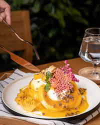

The story behind Ryoku
Cafe comfort, Japanese craft, Bangkok garden soul.
Ryoku began with friends, a Japanese chef and an Osaka souffle pancake recipe they wanted Bangkok to try. The cafe now blends modern Western comfort with Japanese inspiration inside a white garden house on Sukhumvit 35.
เรียวกุคาเฟ่นำเสนออาหาร Modern Western Cuisine with Japanese infusion โดยมี Souffle Pancake เป็นเอกลักษณ์ ทั้งเมนูคาวและหวาน พร้อมซอสหลากหลายที่ได้แรงบันดาลใจจากกลิ่นดอกไม้และรสผลไม้
Explore the Menu